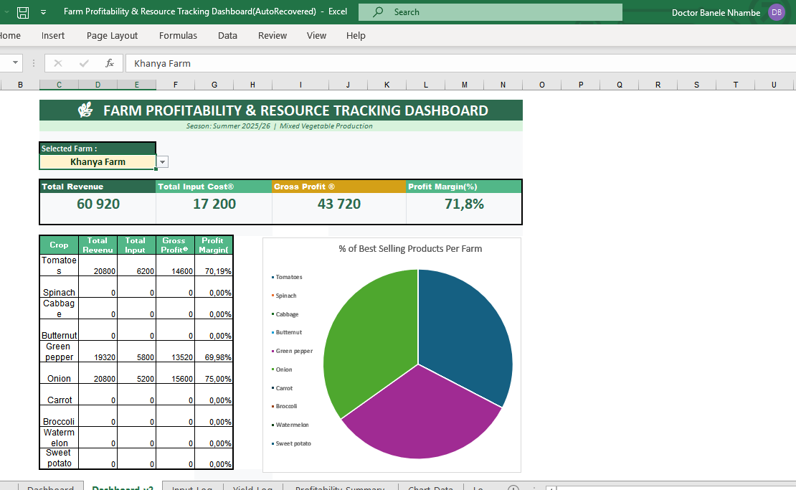

Dashboard and report analyzing farm input costs, crop yields, and resource optimization.

Developer: Nhambe DB
Tool: Microsoft Excel (Financial Modelling & VLOOKUPs)
Sector: Farm Management / Resource Optimization
This dashboard is designed to help large-scale farm managers and cooperatives track the relationship between input costs and crop yields. By centralizing financial data, the tool helps identify “capital leaks” and ensures that the farm remains financially sustainable.
Many farmers struggle to see the true profitability of individual crops because expenses (seeds, fertilizer, labour) are often tracked separately from revenue. Without a unified view, it is difficult to determine which crops are generating profit and which are operating at a loss.